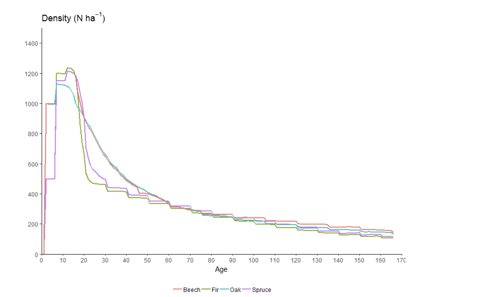
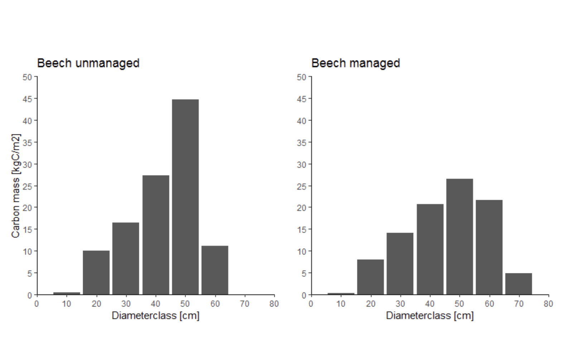

Data Visualization on the Web
Freiburg Frontend Meetup
About me
2015: Dataviz with R in research


Agenda
- The Essentials: What makes a viz truly effective?
- The Craft: The craft behind great charts
- The Tech Stack: D3.js & Svelte in practice
- Charts & Patterns: From shapes to networks & maps
- Inspiration: Tools, resources & community
01
The Essentials
What makes a visualization truly effective?
Data Visualization
is the graphical representation of information and data.
transforms data values into visual, quantifiable forms.
helps to recognize, discover, explain and decide.
is on one hand an art and on the other hand a science.
Visual Encoding
Data values → visual channels (Cleveland & McGill, 1984)
most precise ✓✓✓
very precise ✓✓
good ✓
for categories
imprecise ✗
for categories
Which chart fits?
→ data-to-viz.com — Interactive decision tree: enter your data structure, get matching charts.
Comparisons
Bar Chart, Lollipop, Heatmap
Time series
Line Chart, Area Chart
Proportions
Stacked Bar, Treemap (no pie!)
Correlations
Scatter Plot, Bubble Chart
Distributions
Histogram, Violin, Box Plot
Geography
Choropleth, Bubble Map
02
The Craft
The craft behind great charts
The Core Question
"So what?"
Every chart needs a clear message.
If you can't state it in one sentence,
the chart isn't done yet.
Exploratory Data Analysis (EDA)
Before you can formulate a message, you need to understand the data.
Data visualization is the key to data exploration.
EDA helps identify patterns, outliers, and relationships in the data.
Data Storytelling
Data alone rarely convinces.
A story makes data memorable.


03
Tech Stack
JavaScript, D3.js & Svelte in practice
D3.js
Data-Driven Documents
Not a chart tool — an ecosystem of modules.
Scales · Shapes · Layouts · Projections · Axes · Transitions …
// Data → DOM elements
svg.selectAll("rect")
.data(dataset)
.join("rect")
.attr("x", d => xScale(d.category))
.attr("height", d => height - yScale(d.value));
D3.js vs. Observable vs. Observable Plot
Flexible, but more boilerplate.
Ideal for custom visualizations.
Interactive notebooks with D3 integration.
Perfect for prototyping & sharing.
High-quality charts with minimal code.
Great for quick analysis & standard charts.
D3 + Svelte
The ideal duo
D3 handles:
Scales, Layouts, Shapes,
Projections, Calculations
Svelte handles:
Reactive rendering,
Animations, State, DOM
No virtual DOM — Svelte compiles to native JS → top performance.
LayerChart
Svelte + D3 — declarative chart components
<Chart data={salesData} x="month" y="revenue">
<Svg>
<Axis placement="left" />
<Axis placement="bottom" />
<Bars />
<Tooltip.Root>
<Tooltip.Item label="Revenue" />
</Tooltip.Root>
</Svg>
</Chart>
04
Charts & Patterns
Hierarchies, Networks & Maps
Rendering: SVG vs. Canvas vs. WebGL
SVG → < 1,000 elements · DOM · CSS · Accessibility ✓
Canvas 2D → up to 10,000 elements · pixel-based
WebGL → 100,000+ elements · GPU · 3D
Hierarchies
Trees, nesting, part-to-whole
d3.hierarchy() + d3.treemap() / d3.pack()
Networks & Relationships
Nodes & Edges
d3.forceSimulation() — physics-based layout
Maps
Geographic data in spatial context
d3.geoProjection() — 50+ projections
⚠️ Choose projection deliberately — Mercator distorts areas!
Chart Libraries
05
Inspiration
Artists, Libraries & Resources
Getting Started
Standard charts → Chart.js, Highcharts, Observable
Custom viz → D3.js + Svelte/React
Prototyping → Observable
Learning → Wattenberger, Curran Kelleher
Practice → TidyTuesday
Thank you! 🙏
Questions?